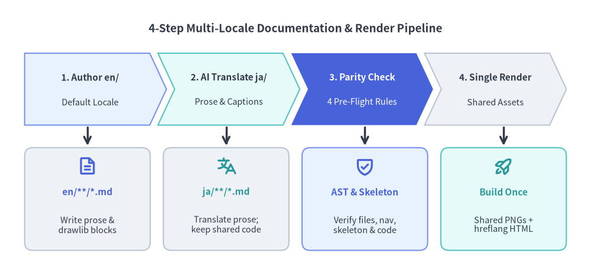
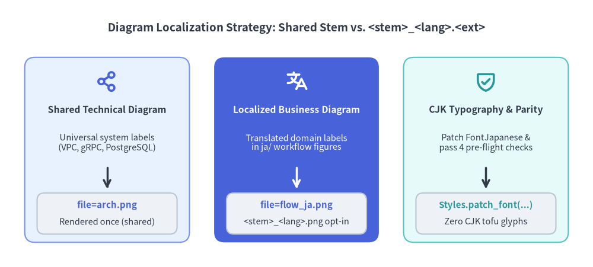

Localization Workflow
Drawlib streamlines multi-language documentation by combining AI-assisted Markdown translation with deterministic build-time verification. Author your Overview and System Architecture pages in the default locale first, translate prose into target locales, and let the compiler render shared diagrams once across the entire site.

Source Code
from drawlib.canvas import save, setup
from drawlib.icons import phosphor
from drawlib.lines import line
from drawlib.shapes import rectangle
from drawlib.smartarts import ChevronProcess
from drawlib.styles import Styles
from drawlib.text import text
setup(width=144, height=67)
text(
(72.0, 60.0),
"4-Step Multi-Locale Documentation & Render Pipeline",
style=Styles.DarkBold.patch(text_size=13.5),
)
pipeline = ChevronProcess(
style=Styles.Neutral,
text_style=Styles.DarkBold.patch(text_size=11.0),
description_style=Styles.Dark.patch(text_size=10.5),
corner_angle=65.0,
spacing=2.0,
flat_left_end=True,
)
pipeline.add("1. Author en/", description="Default Locale", style=Styles.PrimaryNeutral)
pipeline.add("2. AI Translate ja/", description="Prose & Captions", style=Styles.SecondaryNeutral)
pipeline.add(
"3. Parity Check",
description="4 Pre-Flight Rules",
style=Styles.PrimaryFlat,
text_style=Styles.WhiteBold.patch(text_size=11.0),
description_style=Styles.White.patch(text_size=10.5),
)
pipeline.add("4. Single Render", description="Shared Assets", style=Styles.Neutral)
pipeline.draw(xy=(6.0, 36.5), width=132.0, height=17.5)
cards = [
(21.3, Styles.Neutral, Styles.PrimaryBold, phosphor.file_text, "en/**/*.md", "Write prose &\ndrawlib blocks"),
(55.1, Styles.Neutral, Styles.SecondaryBold, phosphor.translate, "ja/**/*.md", "Translate prose;\nkeep shared code"),
(88.9, Styles.PrimaryNeutral, Styles.PrimaryBold, phosphor.shield_check, "AST & Skeleton", "Verify files, nav,\nskeleton & code"),
(122.7, Styles.SecondaryNeutral, Styles.SecondaryBold, phosphor.rocket_launch, "Build Once", "Shared PNGs +\nhreflang HTML"),
]
for cx, card_st, hdr_st, icon_fn, title, desc in cards:
line((cx, 36.0), (cx, 31.5), arrow_head="->", style=Styles.DarkBold)
rectangle((cx, 18.5), width=30.6, height=25.0, style=card_st.patch(shape_r=2.0))
icon_fn((cx, 26.5), width=4.8, style=hdr_st)
text((cx, 20.2), title, style=hdr_st.patch(text_size=11.0))
text((cx, 12.2), desc, style=Styles.Dark.patch(text_size=10.5))
save()
Shared vs. Localized Diagrams
Most technical architecture diagrams contain universal component names—such as API Gateway, gRPC, or PostgreSQL—that require zero translation inside the image itself. Drawlib separates caption localization from in-image label localization using a strict filename convention:
- Shared Technical Diagrams (
file=arch.png): Keep the exact samefile=name and identical Python drawing code in bothen/andja/, while translating the Markdowncaption="..."attribute. Drawlib rendersarch.pngonly once into the shared image directory and references it from every locale. - Intentionally Localized Diagrams (
file=<stem>_<lang>.<ext>): When a business workflow or conceptual callout diagram contains domain prose that genuinely benefits from translation, rename the non-default block to<stem>_<lang>.<ext>(for example,file=localized_callout.pnginen/paired withfile=localized_callout_ja.pnginja/) and explicitly patch locale-appropriate typography such asFontJapanese.

Source Code
from drawlib.canvas import save, setup
from drawlib.icons import phosphor
from drawlib.lines import line
from drawlib.shapes import rectangle
from drawlib.styles import Styles
from drawlib.text import text
setup(width=144, height=65)
text(
(72.0, 58.2),
"Diagram Localization Strategy: Shared Stem vs. <stem>_<lang>.<ext>",
style=Styles.DarkBold.patch(text_size=13.5),
)
# Card 1: Shared Technical Diagram (Neutral)
cx1 = 26.0
rectangle((cx1, 28.5), width=40.0, height=45.0, style=Styles.PrimaryNeutral.patch(shape_r=2.5))
phosphor.share_network((cx1, 45.2), width=5.4, style=Styles.PrimaryBold)
text((cx1, 38.2), "Shared Technical Diagram", style=Styles.DarkBold.patch(text_size=11.2))
text((cx1, 30.2), "Universal system labels\n(VPC, gRPC, PostgreSQL)", style=Styles.Dark.patch(text_size=10.5))
line((cx1, 24.2), (cx1, 19.0), arrow_head="->", style=Styles.DarkBold)
rectangle((cx1, 13.0), width=34.0, height=10.0, style=Styles.Neutral.patch(shape_r=1.8))
text((cx1, 15.0), "file=arch.png", style=Styles.PrimaryBold.patch(text_size=10.8))
text((cx1, 11.0), "Rendered once (shared)", style=Styles.Dark.patch(text_size=10.5))
# Card 2: Localized Business Diagram (Single PrimaryFlat Hero Focal Card)
cx2 = 72.0
rectangle((cx2, 28.5), width=40.0, height=45.0, style=Styles.PrimaryFlat.patch(shape_r=2.5))
phosphor.translate((cx2, 45.2), width=5.4, style=Styles.WhiteBold)
text((cx2, 38.2), "Localized Business Diagram", style=Styles.WhiteBold.patch(text_size=11.2))
text((cx2, 30.2), "Translated domain labels\nin ja/ workflow figures", style=Styles.White.patch(text_size=10.5))
line((cx2, 24.2), (cx2, 19.0), arrow_head="->", style=Styles.WhiteBold)
rectangle((cx2, 13.0), width=34.0, height=10.0, style=Styles.Neutral.patch(shape_r=1.8))
text((cx2, 15.0), "file=flow_ja.png", style=Styles.PrimaryBold.patch(text_size=10.8))
text((cx2, 11.0), "<stem>_<lang>.png opt-in", style=Styles.Dark.patch(text_size=10.5))
# Card 3: CJK Font Patching & Parity Check (Neutral)
cx3 = 118.0
rectangle((cx3, 28.5), width=40.0, height=45.0, style=Styles.SecondaryNeutral.patch(shape_r=2.5))
phosphor.shield_check((cx3, 45.2), width=5.4, style=Styles.SecondaryBold)
text((cx3, 38.2), "CJK Typography & Parity", style=Styles.DarkBold.patch(text_size=11.2))
text((cx3, 30.2), "Patch FontJapanese &\npass 4 pre-flight checks", style=Styles.Dark.patch(text_size=10.5))
line((cx3, 24.2), (cx3, 19.0), arrow_head="->", style=Styles.DarkBold)
rectangle((cx3, 13.0), width=34.0, height=10.0, style=Styles.Neutral.patch(shape_r=1.8))
text((cx3, 15.0), "Styles.patch_font(...)", style=Styles.SecondaryBold.patch(text_size=10.8))
text((cx3, 11.0), "Zero CJK tofu glyphs", style=Styles.Dark.patch(text_size=10.5))
save()
Multi-Locale Configuration & Parity Rules
Multi-language mode is activated by placing an i18n.toml file at the root of the documentation source directory alongside symmetric locale folders (en/ and ja/):
default_lang = "en"
langs = ["en", "ja"]
Before executing a single diagram script, Drawlib runs four mechanical parity checks across every configured locale so translated documentation never drifts out of sync:
- File Set Parity: Every relative
.mddocument path inja/must matchen/(index.md,architecture/index.md,workflow/index.md). - Navbar Parity:
ja/navbar.mdmust preserve the exact section hierarchy, link counts, and normalized target paths defined inen/navbar.md. - Markdown Skeleton Parity: Headings (
H1–H3), collapsed prose regions,drawlibblocks, and fenced code blocks (such as thetomlsnippet above) must appear in the exact same structural order. - Drawlib Code & Stem Parity: Shared filenames must contain byte-identical Python code, while localized diagrams must explicitly opt in via
<stem>_<lang>.<ext>.
Continue exploring the Overview or review the shared topology examples on the System Architecture page.